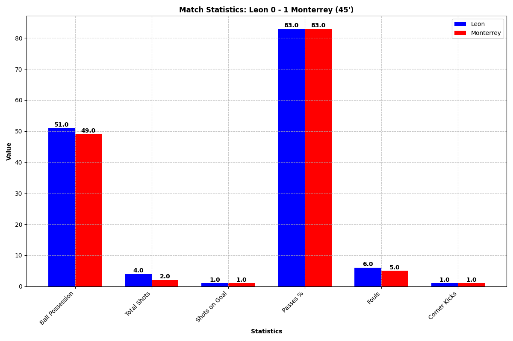
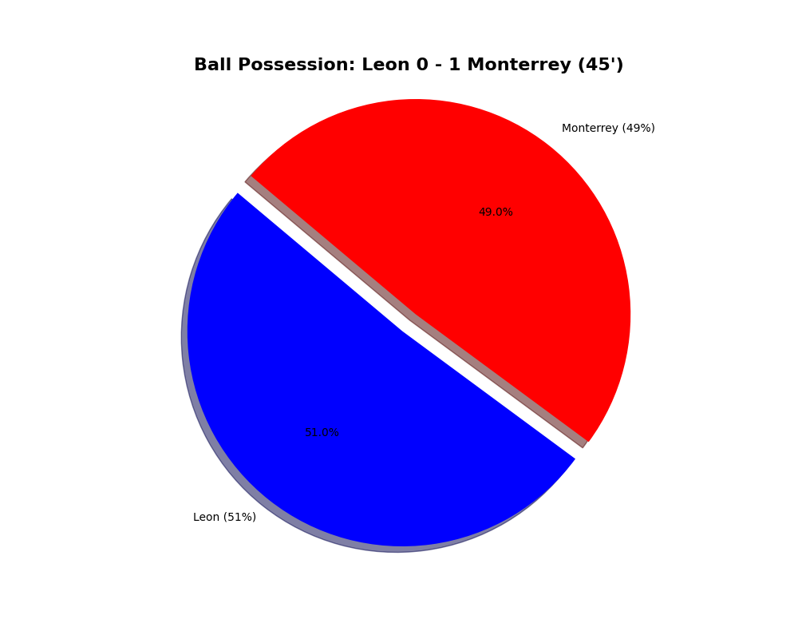
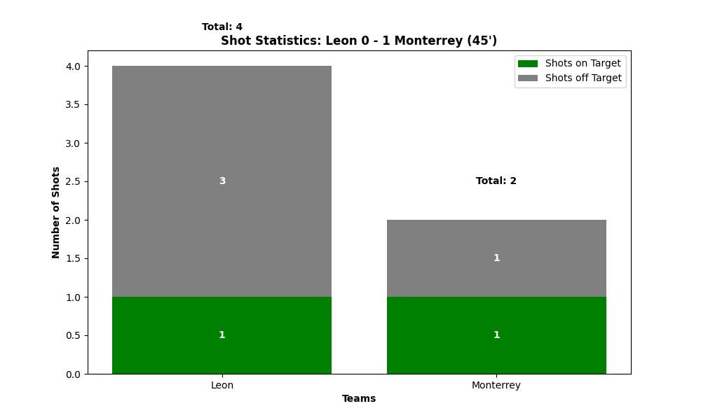
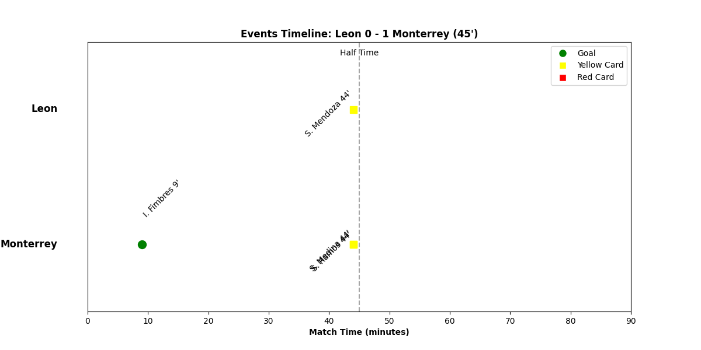

Match Insights
Match Statistics

Ball Possession

Shot Statistics

Match Events Timeline

Match Summary
Match Summary: Leon vs Monterrey
League: Liga MX
Current Score: 0 - 1 (45 minutes played)
Key Events:
GOAL 9' - Goal by I. Fimbres (Monterrey)
Cards:
YELLOW CARD 44' - S. Ramos (Monterrey)
YELLOW CARD 44' - S. Mendoza (Leon)
YELLOW CARD 44' - S. Medina (Monterrey)
Key Statistics:
Ball Possession: Leon 51% - 49% Monterrey
Total Shots: Leon 4 - 2 Monterrey
Shots on Target: Leon 1 - 1 Monterrey
Corner Kicks: Leon 1 - 1 Monterrey
Fouls: Leon 6 - 5 Monterrey